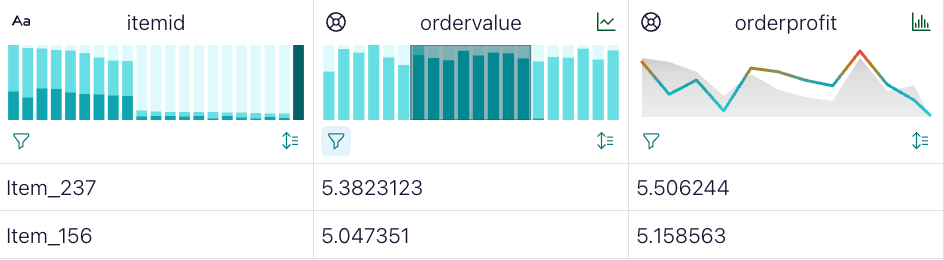
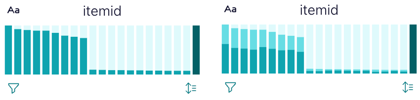
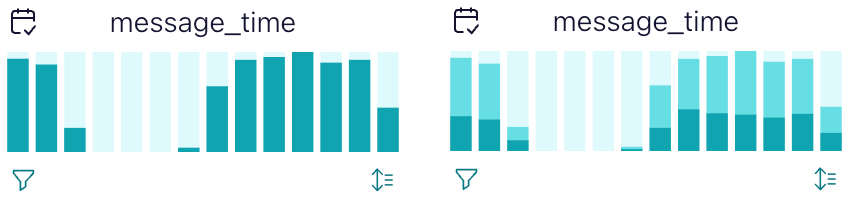
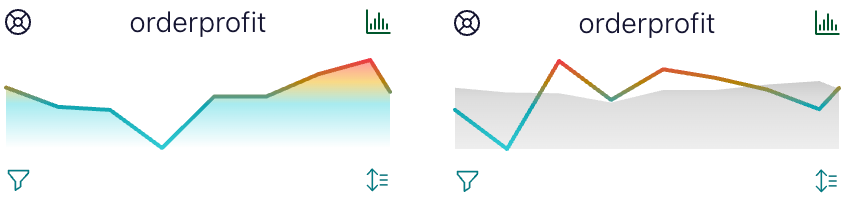
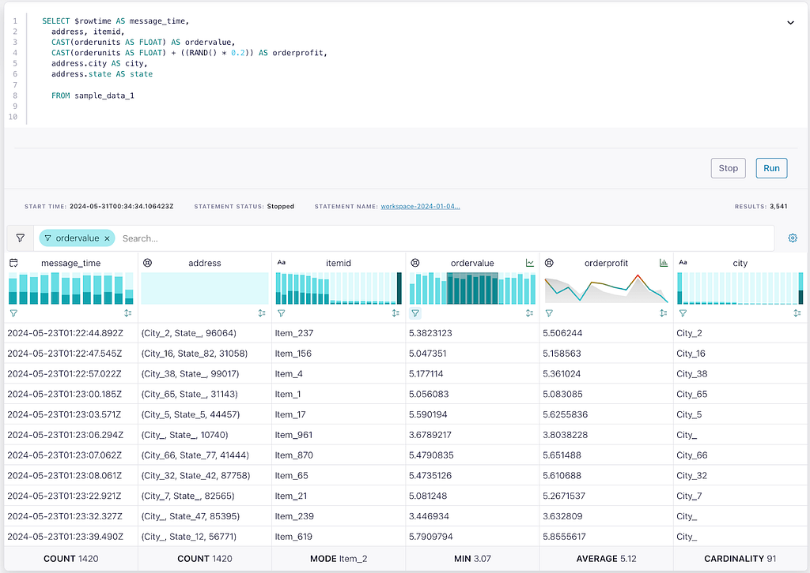
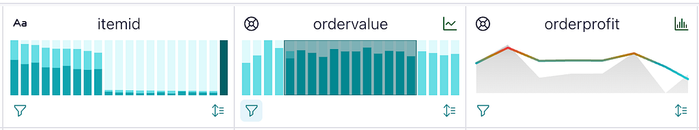
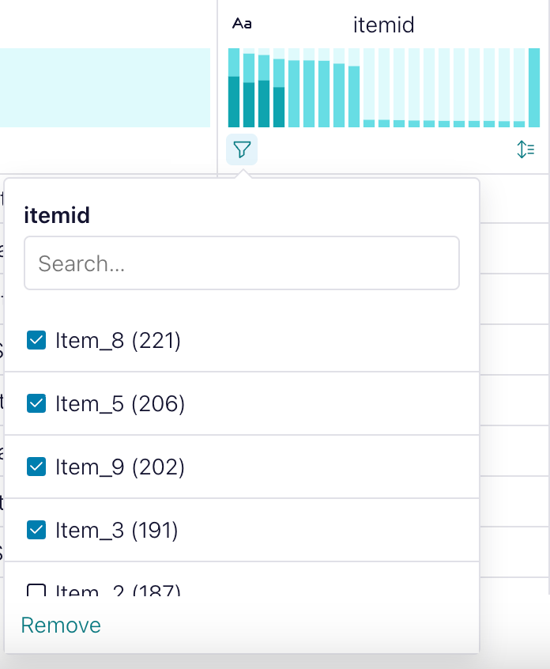
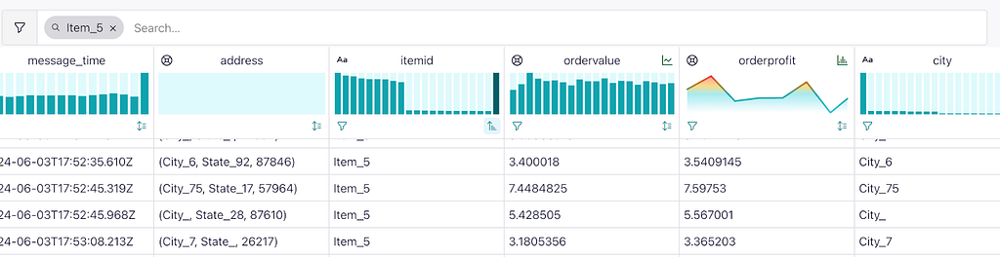

When we came over to Confluent from Noteable, we brought with us ideas gained from our notebooks users regarding how to improve the display of data for stronger understanding and better decision-making. We knew these ideas could also support streaming data practitioners. One of them was based on a Business Intelligence (BI) tool from the notebooks called DEX, that quickly and easily visualized data. Now, we’ve rolled out a change to Confluent that displays results using an interactive table that grew out of the work we did with DEX.
I’m no Apache Kafka expert, so I appreciate how Confluent lets me use Flink SQL to understand and create streams of data just like I would create tables in a database. And I can see more than a typical SQL output of rows when I run these Flink queries. Let’s walk through the features of the UI enhancements we’ve added to Confluent to better understand not just this data table, but to illustrate how you might think about designing better data tables for your own work and for your stakeholders.
New Table Features

The visual grid provides sortable infinite scrolling results updated in real time as the query runs, so you can explore the individual rows in your query results, whether it’s reading a topic or creating a complex join. It’s a typical modern table that lets you scroll through the data and copy individual cells, and do the things you expect data tables to do.
But it does more than give you a seamless table of results. It also includes robust functionality so you can efficiently understand the shape of your data, and find items in the data that you need. It works that way because we’ve thought a lot about what people want when they output a table of data—and it’s not just rows of data.
Tables with rich graphics are not a new idea: iterations have been around since the earliest work with sparklines. Great examples are Trifacta’s data profiling-focused grid and Observable’s Data Table. Tables are not raw data, despite how they’re advertised. Tables, whether you like it or not, are a kind of data visualization themselves. They are particularly good at showing large datasets with diverse attributes in a way that most data visualizations do not. But their strength is also their weakness: delivering a table of data can seem like a “good enough” solution that doesn’t require any further work. And worse, end users are unlikely to request features beyond those seen in simple tables, because they’re just happy to get some kind of view into their data, and don’t expect tables to do more than that.
To make great data tables, one needs to focus on the tasks that users perform with tables, and to think about how better tables can be built in order to improve the lives of those users. For me, those tasks are scanning and summarizing. When a data scientist returns the first 50 rows of a 10-million-row dataset in a Jupyter notebook, they’re not trying to understand it in the same way they might if they threw it on a scatterplot, but they’re still trying to understand it. A brief reading of a sample of data in a table helps them to see representative rows of data (scan) and also guess at the distributions of values (summarize).
But rather than guess, we can make those tasks easier by integrating elements into the table that are optimized for scan and summary.
Summarizing with Sparklines and Statistics

Summarizing data for effective decision-making requires that the data be shown in a way that draws the reader’s attention to important trends, patterns and outliers with the least amount of effort. This isn’t easy even with a custom-designed chart made by a domain expert. It’s even harder when you’re building generic tools to summarize whatever data might exist in a table. A good rule is to provide views that are amenable to the broad categories of data that appear in tables: numerical data, categorical data, boolean data and time data. That typically means showing distributions (either of numerical data that has been binned into a histogram, or of the top items in a categorical column), and showing time series data when time is available.
When it comes to summarization, our interactive table provides you with two main views into the shape of your data: the sparklines in the header of your column and the summary statistics in the footer. Sparklines come in two flavors, with the default and most common being a bar chart, or histogram, of the distribution of values in a column.

For non-numerical data, a bar chart shows the count of the most common unique values with up to twenty items, and the rest lumped together into an “other” column. Here we can see that the item IDs in our stream are mostly represented by nine common items, with a long tail distribution of less common items.

For numerical and date columns, the rows are binned into a traditional histogram showing the frequency of rows of data across the extent of the known values, allowing you to see bimodality, long tails and skew. In this case, it’s a distribution of the timestamps of the messages that shows us a gap in message times that might indicate a problem that needs to be resolved.

If your Flink results have a datetime column, then you’ll have a second option for numerical columns: a line chart that displays the mean value of the column over time. Here we can see there’s a dip in order profit some time back and a recent peak.

Finally, the table provides a variety of different summary statistics about the column in the footer. These vary based on whether the column is a measure or a dimension, and they allow you to get some sense of the shape of the data as well as critical context for individual rows.
Filtering and Search (Scan)
You’ll notice that each of the examples above has two different versions of the chart: one filtered and one unfiltered. That’s because when a table user is in scan mode, we don’t want them to just scroll through the contents to find a row that represents the pattern they’re looking for. Even with row sorting, that’s inefficient and prone to error. Instead, we expose filtering and search to narrow down to the rows you want to see, which satisfy the parameters you pass.

You can brush the distributions of numeric or date values to filter to that region in the histogram, and you can see the filtered effect across the data in your results, as well as in the charts in the table. Brushing is a common technique for filtering on charts like this, and works well in the small space provided for charts in a column header.

But brushing doesn’t make sense for categorical data, so instead we expose a selector to pick the items in the column that you want to filter by (sorted by the most common). This way a user can easily pick just a few categories and focus their exploration on that subset.

And because the scan task would not be complete without it, we also have a simple text search that lets you isolate the rows to just those that have a given text appear somewhere in the row. Notice this isn’t filtering the dataset, it’s just isolating the rows for display purposes.
With these tools, you can understand the shape of your data, and isolate the row or rows that represent the critical parts of your data that you need to concentrate on. And all of this happens within the table form factor that everyone is comfortable with.
Design your tables to optimize task completion
It’s not enough to simply deliver a tabular view of data to a user and assume the mission is over. Instead, you should look at tables as a form of data visualization, and consider the opportunities available within the form to expose more effective and ambitious ways to empower your users to complete the tasks they intend to achieve with those tables. That includes the techniques seen in the interactive table but doesn’t end there.
And when you think about designing your tables, don’t fall into the habit of the table being isolated on its own. Tables are great for context and make powerful additions to dashboards. But when used as context, they should be designed for support in a way that’s different when the table is the sole view into the data.
Another design principle to keep in mind around tables is to know your audience. Tables designed for data engineering tasks will be different than those focused on a different task, like data profiling. If you’re more focused on operational concerns, you’ll want to foreground data consistency issues, but if you’re more focused on analytical views, you’ll want to expose historical trends and correlations.
Regardless of who your audience is, a table can always be better. These are powerful information displays that audiences are familiar with, and that means we should spend more time on their design, rather than just deploying rows of results because it’s convenient. By focusing on what the table is used for, you can integrate techniques like those above, so that you don’t just improve the task at hand, but also grow the analytical skills and literacy of anyone who uses your table. That’s going to lead to better views, which will lead to better decisions, which will lead to a better, more data-driven organization.
The views expressed in this article are those of the author and do not necessarily reflect the position of Confluent.
Should My Data Be a Table or a Chart? Yes. was originally published in Confluent on Medium, where people are continuing the conversation by highlighting and responding to this story.